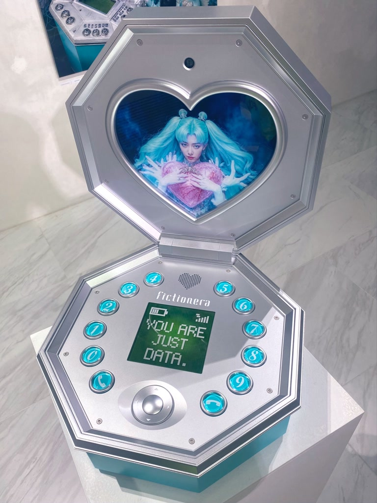

PRIMARY SOURCE / STILL PHOTOGRAPH
@benoit_tokyo_ · Emi Kusano opening at RK Contemporary ↗The landscape artwork is the Daily Frontpage plate “The heart behind the bevel”, 03 November 2026. The photograph is the true source, not the generated plate.
Transmission is a locally generated MP4 camera move through that plate. The source record contains only a still image. No original linked video is claimed.
Exact source image ↗Borrowed room asks for camera only after Enable. Local GPU texture only; no recording, upload, microphone, or analytics. Off, changing studies, leaving, or hiding the page stops every track. Without permission: touch reflection of the plate, never presented as live.
Experimental review only. Freeze respects reduced motion. A still remains when WebGL is unavailable.